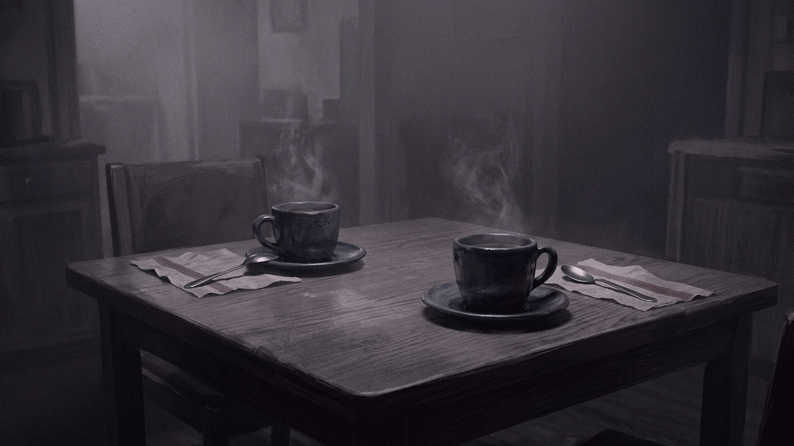
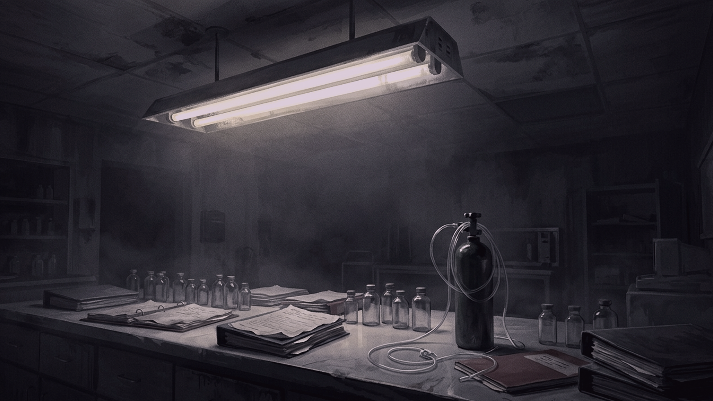
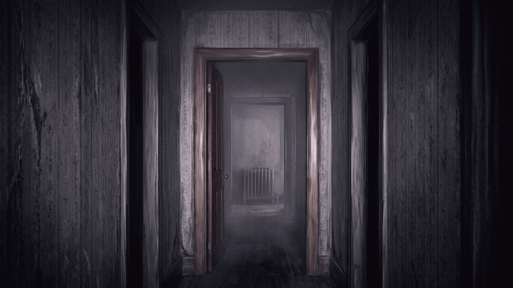
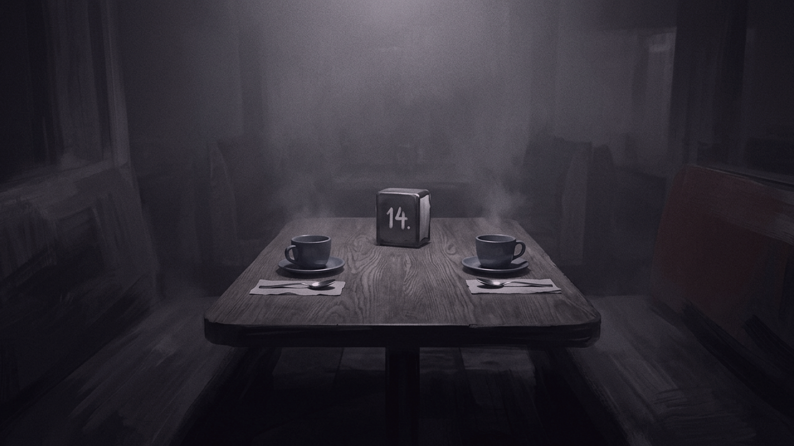
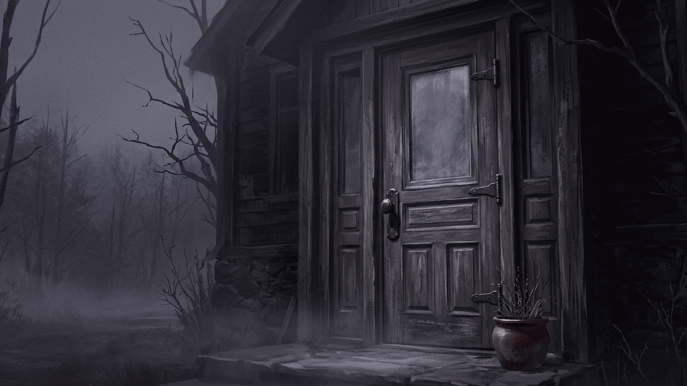
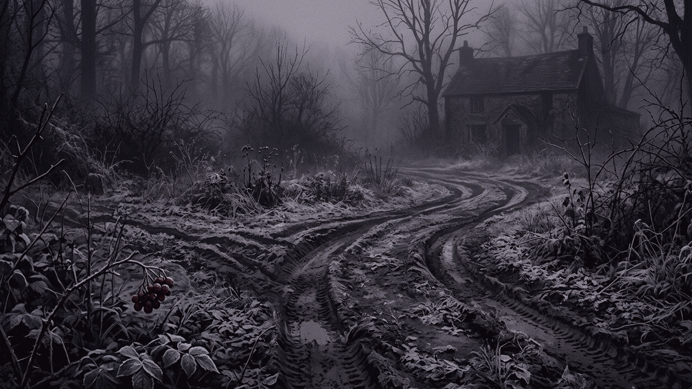

Perla Lindqvist poured black coffee into a chipped stoneware mug, the steam carrying the bitter reek of scorched grounds through the narrow office at the back of the mortuary. She had gone twenty-one days without three consecutive hours of sleep. Her mother’s vascular dementia had turned a sharp corner three weeks ago, forcing Perla into a relentless loop of dawn and twilight visits to crush Memantine into spoonfuls of apple butter. Mrs. Jensen, the funeral home’s night attendant, frequently let Perla sleep on the horsehair sofa in the file room when the ten-mile drive home over iced asphalt proved too much for her eyes to focus on.
Mrs. Jensen shuffled into the office five minutes later, wiping her knuckles on a grease-stained canvas apron. "I'm dropping batter in the skillet at six, Perla. You want three pancakes or four?"
Above the counter, a twin-tube fluorescent fixture hummed at sixty hertz, flickering once before settling into a dull yellow glare across the Formica.
Perla nodded without looking up. She knew the cadence of this place down to the inch. For nearly a month she had been stopping here to provide end-of-life care for Emily Wilson, a seventy-two-year-old former seamstress dying of pleural mesothelioma. Mr. Thompson, the funeral director, had paid Mrs. Jensen out of his own pocket to remain on site after midnight, turning the back wing into an impromptu hospice ward so Emily would not have to die in a county hospital three towns over. Perla arrived every morning at 4:30 a.m. to review the dosage charts with Mrs. Jensen and track Emily’s oxygen drops.
She walked down the narrow central hallway toward the back room. As she passed the doorframe of Emily’s quarters, her right arm brushed against the pine jamb. The wood was worn down to the bare grain at precisely five feet four inches from the floor—her exact shoulder height—polished smooth by dozens of daily passes. She did not stop to look at it. Her focus was entirely on the cold air pushing out from under the threshold. The room’s radiator had died hours ago; the temperature had plummeted to fifty-two degrees, and Emily’s chest was moving in shallow, dry hitchings beneath two heavy wool blankets.
Perla went to the staff break room to retrieve the morning chart, expecting Mrs. Jensen’s usual arrangement on the counter: one mug half-filled with cold tap water and a single brown paper towel folded twice beside the zinc sink.
Instead, the four-foot oak laminate table was set for two. Two blue stoneware cups sat on matching saucers. Two stainless steel spoons lay aligned with the edges of two cheap paper napkins. The heavy iron napkin dispenser in the center of the table was stamped with a white painted number: 14.
She is preparing for the memorial service, Perla thought. The spring service always brings thirty-five or forty people. She started early and forgot to clear the test setting.

It was a sensible explanation. Mrs. Jensen was seventy-one and often mixed up the weekday routines when her knees flamed up.
Perla filled her mug from the glass carafe on the hotplate. Her hand moved automatically, measuring two tablespoons of powdered creamer and three lumps of white sugar. She took a sip. The liquid tasted flat and sour, like well water boiled in an iron pot that had sat untended since midnight.
She sat down on the wooden bench. The seat joint gave a hard, dry groan beneath her hip. She shifted her weight, wedging her heel against the table leg to stop the wobble, her thoughts already jumping ahead to Emily’s morphia drip and the blue binder where the fluid intakes were logged. Mrs. Jensen’s odd table setting could wait until six o'clock.
She stood up to clear her mug, but the stillness in the room felt thick, heavy with the smell of damp cellar stone and floor wax. She stepped out into the hallway. The air here was thin, smelling faintly of formaldehyde and wet carpet, but it did not burn her nostrils like the break room air. She walked toward Emily’s room, her crepe-soled shoes making no sound against the runner.
The long hall stretched fifty feet under six exposed bulbs. Perla pushed the heavy oak door to Emily's room inward. The iron hinges shrieked once against their pins before yielding. She stepped over the brass threshold, and the door swung shut behind her with a dense, flat thunk.
Perla set her mug on the bedside table next to the pot Emily’s daughter had brought the previous afternoon. The coffee inside the carafe had cooled into a dark pool skimmed with a thin film of dried oil. She dropped three sugar cubes into her own mug—a habit she had picked up eight years ago during her six-month clinical rotation at Södersjukhuset in Stockholm. The extra glucose was the only thing that kept her awake through twelve-hour night shifts. As she reached for her mug again, she noticed it was sitting four inches to the left of where she had set it down three seconds earlier, resting against the edge of an unused brass lamp base.
You are dropping your eyes while standing up, she thought. You set it there yourself.
The iron pipes behind the plaster wall produced a long, shuddering metallic groan that vibrated through the floorboards under her boots. It sounded like the ancient coal furnace in her grandmother’s house outside Östersund—a mechanical grumble that meant the brass pressure valve was sticking again.
She reached down to touch the small leather key fob clipped to her brass belt loop. It was a souvenir from a junk shop near the Slussen lock in Stockholm—a smooth, dark piece of cowhide attached to an uncut iron key that fit no lock in her home or her office. She ran her thumb across the worn leather, feeling her heart pulse twice in her throat before settling back into its slow, heavy rhythm.

She moved to the side of the bed to strip the soiled top sheet. As she tucked the fresh cotton linen under the foot of the mattress, she noticed the entire bed frame sat three inches further back toward the interior wall than it had at midnight. The white paint on the baseboards showed two fresh, grey gouges where the iron casters had scraped through the enamel.
The carpet slipped when I walked in, she reasoned. The floorboards are bowed.
The door creaked open. Mrs. Jensen, the secondary night attendant, stepped into the room carrying a tray set with a bowl of cold oatmeal, three slices of dry white toast, and two plastic tubs of margarine.
Perla offered her a brief, tight nod. "Emily hasn't swallowed solids since Tuesday, Mrs. Jensen."
"It's for the family," Mrs. Jensen said. Her voice was flat, dry as pine shavings. "They'll be here before six."
She set the tray on the dresser and walked back into the hall without looking at the bed. Perla followed her out into the corridor, her eyes tracking the movement of her grey wool trousers. As she stepped past the jamb, she glanced back over her right shoulder. The door was still open an inch, but the brass latch was extended fully, resting against the outside of the frame as if it had been thrown from within.
She walked past the office toward the front reception desk, intending to call the hospice dispatch center to confirm Emily’s morning dose. Her mobile phone was dead; the screen remained pitch black no matter how long she held the power button down. She had forgotten to plug it into the dashboard charger during her drive from her mother's house.
The black bakelite desk phone sat beside the visitor register. The heavy rubber cord was wrapped four times around the front leg of the oak desk, pulling the handset off its cradle so it hung suspended two inches above the floor carpet. Perla knelt, unwinding the coiled wire with stiff fingers. She replaced the receiver on the hooks and picked it up again to listen for the dial tone.
The line was dead. A faint, high-frequency hiss was the only sound coming through the speaker, like wind blowing through an open window three miles away.
From the kitchen down the hall came the smell of scorched bread—sharp, acrid, carrying the scent of carbonized yeast. Mrs. Jensen was burning the toast. The smell hit the back of her throat, making her stomach contract into a hard knot. Emily’s relatives were not scheduled to arrive until six o'clock, and Perla had eaten nothing since a cold boiled egg at three yesterday afternoon.

She turned her head toward the wall clock above the archway. The black steel hands pointed to 4:47.
The funeral home's satellite internet receiver had been dead for forty-eight hours, knocked out by an ice storm that had snapped three pine branches over the rear alley. This was her fourth attempt to reach the main office. Mrs. Jensen, she knew, had no trouble with her equipment; she carried a heavy grey flip phone in her breast pocket and was constantly stepping into the vestibule to speak quietly to her sister.
Perla stood on the runner between the reception desk and the front door. The silence between her heavy steps seemed to hang in the air long after her boots stopped moving, vibrating against the wallpaper like the low hum of a distant transformer.
A sharp, metallic crunch came from the gravel driveway outside—the sound of heavy tires crushing six-inch blue slate stones.
The family is early, she thought. They brought the second car.
She wiped her damp palms against her trousers and walked toward the double glass doors of the main entrance to let them in.
As her boots hit the brass transition strip between the hallway carpet and the vestibule linoleum, the air pressure in the room dropped sharply. Her ears popped twice. The air smelled suddenly of wet lime and crushed river stone, cold and raw.
She stopped. Through the bevelled glass of the door, she looked down at the gravel drive.
Two parallel ruts in the blue slate stone led directly from the highway to the front porch, but they ended six feet to the west of where the main walkway met the steps. The tire tracks ran straight through the middle of Mrs. Jensen’s pruned boxwood hedge. The crushed green leaves lay scattered across the white snow, dark and wet.
Mrs. Jensen pulled the truck in too fast last night, Perla told herself. She hit the curb in the dark.
She took a deep breath, forcing her shoulders down. Her boots creaked against the linoleum—grind grind—as she reached out her right hand to grasp the heavy brass latch of the entrance door.
The transistor radio sitting on the lower shelf of the umbrella stand burst into loud, white static.
Perla froze. The radio was an old battery-operated Philco that Mr. Thompson kept tuned to the local emergency band at 540 kilohertz, a frequency that had broadcast nothing but dead air since the tower in Westford collapsed five winters ago.

A male voice came through the speaker, thin and rasping, stripped of tone by heavy interference.
"Two-thirty-seven," the voice said. A pause, followed by three seconds of rhythmic static. "Two-thirty-eight."
Perla stared at the plastic dial. The red needle was jammed all the way to the left side of the display, past the numbers, pinned against the black plastic stopper.
"Two-thirty-seven," the speaker rasped again. "Two-thirty-eight."
The broadcast cut off with a sharp snap, returning the hallway to total silence.
Perla’s fingers remained wrapped around the cold brass of the door handle. She pulled, but the latch did not move. The heavy glass door sat dead in its frame, sealed tight against the weather stripping.
The overhead lights flickered twice and died.
The temperature in the vestibule dropped five degrees in three seconds. Perla could see the faint white cloud of her own breath hanging in the dark air before her nose. Her skin tightened across her cheekbones; her fingers grew numb inside her leather gloves.
She tried to take a step back toward the central hallway, but her right boot struck the baseboard three inches before it should have. The wall had moved inward. The six-foot-wide vestibule had narrowed; the plaster on her left shoulder was now touching her coat.
She stumbled, her elbow slamming into the door frame as she reached blindly for the brass latch to steady herself.
The smell of burnt toast was gone, replaced instantly by the thick, sickening reek of wet rot, damp cellar wool, and cold iron filings. A wave of heat hit her from behind—not the warm air of a furnace, but a sudden, localized blast of dry heat that smelled of copper and scorched hair, pressing hard against the back of her neck.
Her heart hammered a fast, ragged rhythm against her ribs.
She turned her head four inches to the right. Something was standing in the dark narrow space behind her shoulder—something tall enough to block the faint grey light coming through the transom window above the door. A warm, wet breath settled on the skin behind her left ear, carrying the sharp, metallic taste of wet clay.
She spun around, swinging her elbow out into the dark.
Her arm hit nothing but the dry, flat plaster of the vestibule wall.
The transistor radio on the shelf below crackled once more. The voice was clear now, close to her face, coming not from the speaker but from the dark air six inches above her nose.
"Close," it whispered.
Perla backed up until her spine hit the heavy glass of the front door.
"Close," the voice repeated. It was louder now, dry and flat, carrying the even cadence of an inspector reading numbers off a tally sheet.

A flashlight beam cut through the dark from the inner hallway. The circle of white light bounced off the wallpaper, illuminating Jerry, the morning attendant, standing by the archway. He wore a grey wool vest over a pressed white shirt. His face was entirely devoid of expression; his arms hung straight down at his sides, his thumbs hooked casually into his pocket seams.
"Jerry," Perla said, her voice dry as salt. "The latch is stuck. The line is down."
Jerry did not move the flashlight. "I know, Perla."
"Call Thompson," she said, taking a step toward him. "The front door is jammed. The radio—"
"I'm just doing my rounds, Perla," Jerry said. He did not raise his voice. He did not lower the light. "I have eleven minutes left on the shift."
Perla stopped. Her mind moved backward through the last three weeks, stripping away the explanations she had carefully constructed for every discrepancy in the building.
Thirteen days ago, she had spent twenty minutes reviewing the mortuary’s leather-bound visitor log while waiting for the pharmacy delivery. On the entry for May 11th—the night she had first slept on the file room couch—a single line had been crossed out with three heavy strokes of black ink. Above the scratched-out name, someone had written a single word in precise, block lettering: Replaced.
She had assumed it was a clerical note made by Thompson regarding a temp nurse who had failed to show up for her shift.
Jerry’s eyes remained fixed on the space two inches above Perla’s left ear. He gave a short, three-millimeter nod toward the dark corridor behind him.
The heavy door to the preparation room swung open without a sound.
A figure stepped out into the hall. It was tall, broad-shouldered, wearing an unbuttoned overcoat of dark grey wool that smelled of wet asphalt and cold oil. Its face remained in the shadow cast by the high ceiling beams, but its eyes caught the edge of Jerry’s flashlight beam—two flat, grey disks that did not blink as they locked onto Perla's face.
Jerry shifted the light six inches to the left, illuminating the floor between them.
Perla took two paces backward, her heels digging into the carpet runner until her back pressed against the iron frame of the door.
The realization did not arrive like a sudden stroke of lightning; it settled over her with the cold, heavy weight of an administrative filing.
The locked doors were not meant to keep something out. The dead phone lines, the altered dimensions of the rooms, the tire tracks in the garden, the radio counting its endless inventory—it was not an attack on her. It was containment.
The facility was not a funeral home. It had never been a funeral home. The three weeks she had spent walking these halls, the long nights with her dying patient, the cold coffee, her mother in the municipal home three towns over—they had isolated her here because the change had already occurred twenty-one days ago, on the iced road between her house and the alley.

They were not keeping her safe from the dark. They were keeping the world safe from her.
***
Two days later, the morning sun broke through the grey river fog over the east side of the town, casting long, flat shadows across the rows of identical brick bungalows that lined the avenue.
The administrative records for the county mortuary showed that Perla Lindqvist had been absent from her nursing duties for forty-eight hours due to family illness. No calls had been made to her mother's care facility. No inquiry had been logged by the local precinct.
Inside the building, the morning routine proceeded on schedule. Jerry started his seven o'clock rounds through the lower ward, his rubber-soled shoes clicking softly against the freshly waxed linoleum. He carried a grey plastic clipboard tucked under his arm.
He paused at the desk in the reception hall, picked up the iron-bound logbook, and uncapped a blue ballpoint pen. On the line marked 0500 hours, he wrote five words in precise, square script: Perla Lindqvist, hospice nurse, Replaced.
He closed the ledger and stacked it beneath the brass paperweight.
In the small records room behind the chapel, the air was cold, smelling of old newsprint and floor wax. The heavy oak filing cabinet stood against the far wall, its bottom drawer pulled out three inches.
A quiet tap sounded at the heavy wooden door—two light knuckles against the frame.
"Perla?" Tim, the facilities manager, stepped into the room holding two green stoneware mugs. "You need anything before I start the burner?"
Perla took the mug from his hand. The ceramic was warm against her palms; the coffee inside was black, lukewarm, and tasted faintly of iron sediment.
"No," she said. Her voice was flat, level, carrying no more weight than the rustle of dry paper. "I'm finished with the files."
She set the mug on the edge of the oak desk. As she did, her eyes fell on the wide paper margin of the shift log lying open beside her elbow.
Along the right edge of the page, three small, identical gouges had been dragged through the thick cream paper—three narrow, deliberate scrapes cut deep into the wood pulp, like the marks left by three iron nails dragged down a door.
Behind her, at the end of the dark corridor, the heavy steel deadbolt in the outer door was drawn back into its brass housing with a slow, dry rattle: grind grind, scratch-scratch.